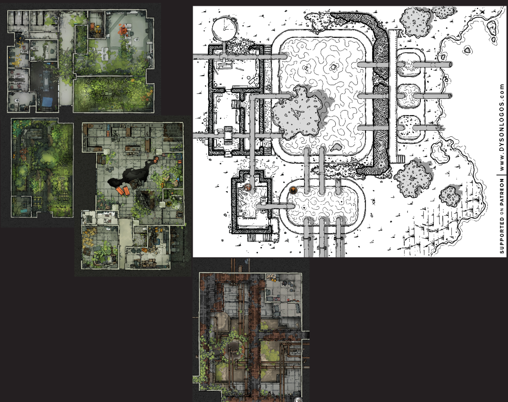
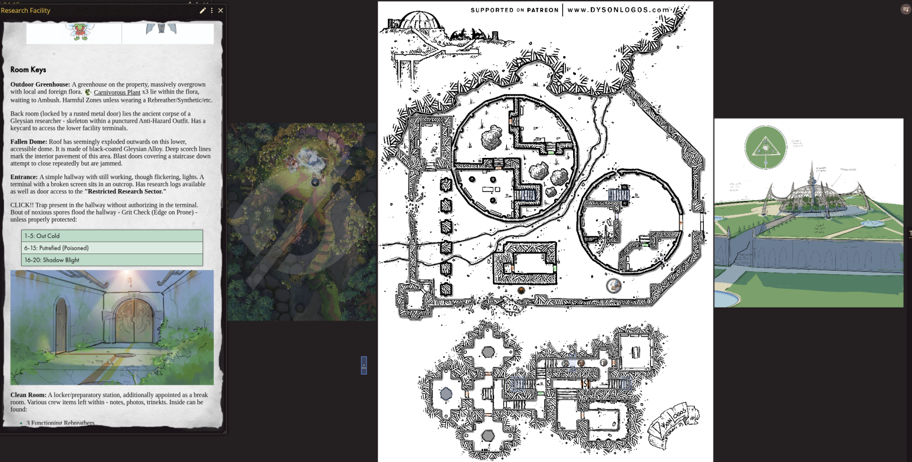
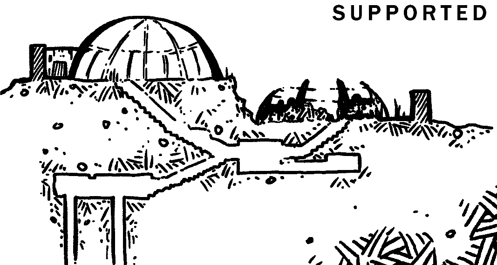
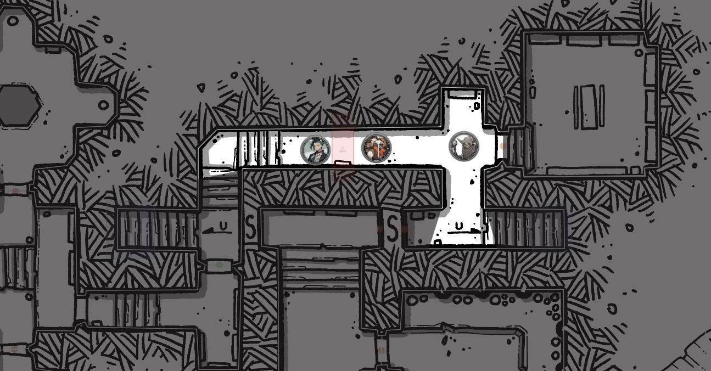

Why hello there, on this episode of BREAK!!: The Wandering Trio! we discuss how prepping Adventure Sites is scary (to me) and try out the Exploration Rules within the system for the first time…after 3 years of playing it.
First prep notes (warning: ramble-y), then session report.
Prepping Adventure Sites is Scary (to me)
I like to use a lot of artwork and visual maps in my sessions - from world maps down to a vibeboard describing a place - and thus I’ve always had some friction with the amount of prep it would take for my brain to be satisfied in building out what would essentially be a “throwaway” Adventure Site. By throwaway I don’t mean a fully improvised site where I just wing it and it has no campaign impact; I mean ones that the party will visit one single time and never again (regardless of how impactful it is). So, given this, I’ve always leaned towards more theatre-of-the-mind style scenarios/”Sites” leading into one singular impressive final room map (alongside some vibe art). However, this comes a bit at odds with the great pointcrawl-like Exploration mechanics that BREAK!! offers, and especially so given that many Callings have built-in Abilities to interact with them (which I, so far, have had no Players take. Chicken vs. egg? Maybe).
So when the campaign naturally leant towards exploring a derelict Gleysian Research Facility that was dumping mana waste into the Spirits’ Grove, it was time to finally face the fear - building out a proper site with multiple layers (exterior courtyard, interior underground facility, so forth) that could be mechanically explored. I knew I wanted to try out Dyson Logos maps since I’ve seen their work for years and have always been a big fan seeing it with other systems like Shadowdark. I found one that fit well and imported into Questline.
Immediately, and I mean immediately, my brain fell into itself and decided it wasn’t satisfied with “just” the black-and-white map. How would I do satisfying zones for combat? Would my descriptions be sufficient? Circles and circles of questions. I got to this point below with attempting to piece together maps:

I really was trying to slam in a map for every singular room and make it a whole thing rather than just rely on the map itself. I have to say the cohesion in the room-to-map layouts was pretty good, so props for that. However, in practice, running this would mean statting out damn near everything for the individual rooms and it makes descriptions much harder if I’d be constantly contradicting the room reference map. So, I came to sense and did a round 2 from a new map with the goals: trust the map more, room key it, and use vibe art or auxiliary maps sparsely. I ended up with this:

I get my final room grand visual battlemap while leaning in on the base map and a room key for the exploration. Wow, how novel and crazy - almost like nearly every theory blogpost I’ve read can boil down to that in some form. But, genuinely, this led to a much better prep process for keying the rooms and meaningfully fleshing out the structure. I could go room-to-room, figure out how they relate and what weird BREAK!! things I could slap in each, and then step back and correlate it to the overarching story. Pretty cozy and now I feel set to run at least 2 sessions here.
In the next session report, after polish, I’ll give the room key breakdown in case anyone finds use out of it.
Actually Running an Adventure Site
Of the estimated 2 sessions, I have run one so far. How did it go? Scary of course. I’m just a scared little guy.
In earnest, though, it ran smoothly despite being a moderate shift in my narrative style and how I interact with my players. It (perhaps obviously) was much more mechanical in stating marching order, movement style, etc. of the Explore Rules compared to my normal theatre-y progression, and was fairly slower. Running this was funnily reminiscent of early GM’ing days - awkwardly figuring it out live. I think it is a symptom of having not explored a diverse set of systems/styles, as it is probably just a trainable skill to switch between styles. Regardless, the players enjoyed it and we all agreed there’s a path to comfort here.
I do think I could have described the exterior of the Adventure Site better and maybe shown the vertical slice map explicitly to showcase how the Site was split into 2 domes/2 tiers. I didn’t give enough context and did a bit of the infamous “what do you do” trap, but ah, we got there.

Technology-wise it was smooth (mostly)! I run my games on QuestlineVTT (an amazing, versatile VTT I recommend checking out) and got to finally test out its dynamic fog-of-war and wall features. This was all very slick and led to cool interactions, e.g. the party got genuinely lost from each other at one point and it felt like a more tactile interaction with the environment.
There is a bit of a learning curve for pacing and movement freedom between me and the players but these are just first attempt stumbles. I used QVTT’s new Zones feature to put in a cheeky trap in the corridor as a teaching moment not to run ahead against pacing - a classic setup which I was glad to witness in my own game. As well, shoutout to VictorSeven’s CLICK!! Trap system for BREAK!!. It fits incredibly well.

Overall, these mechanics are cool and I need to, and will, learn them. It’ll take some adjustment in our style but it’s worth it to meet the game where it’s at - in all its forms. I am very excited for BREAK!!’s first supplement START which will detail system onboarding. The Adventure Site visuals shown thus far look to showcase these systems very well!
Note: Some of the artwork shown in screenshots above stem from a BREAK!! Blogpost detailing an Adventure Site which I took inspiration from (and one which I suspect is being realized fully for inclusion in START). The blog is a goldmine of ideas and art, and has given me so many ideas just browsing it over the years!
Phew, that was rambling, huh? Session notes to palate cleanse.
Session Report
This session had it all gang - Downtime, Crafting, Negotiation, Journey, Explore, Combat - packed into a mere 2-hour session. Our party is of course within the Evergrove, as yet standing heart of the now corrupted Spirits’ Grove. After last session’s setting-heavy conversation, we looked towards kicking back into the jungle to handle some business: 1) investigating the recently reactivated Gleysian Research Facility to see why it is spewing sludge into the rivers and 2) head to a den of druid goblins that are frustrating to converse with but likely to have some information on the party’s adversary the Idea of Thorns. The party decided that the Research Facility was a good starter “side quest” to tackle before the “main plot” goblins - little do they know.
Regardless, we started with a round of 2 Downtimes each - one a freebie Injury heal and the other their choice:
- Abra decided to bend the rules of Identifying a Relic to mean foraging through Elix’s hoard of trinkets for “something useful”. A successful luck check later and Abra is the proud owner of a Feather-Touched Pouch now. Elix did clock this happening but (somewhat) sees Abra as an adopted child so let it go. There was the funny thought to put the Bag o’ Feathers in it until they can pawn it off on some sorry sucker.
- Lookus wanted to take the Paladin’s Tear they found on Urarani’s body and imbue an Artisan’s Outfit with it for their resident healer Gack. Technically there was no Advanced Workshop here but they already had a base outfit made of magical material (a Starlight Ball Dress) so I allowed altering (and imbueing) it with the risk that the materials were lost on a failed roll entirely. He rolled a 19 so R.I.P. the gorgeous dress of an Aeon past.
- Gack decided to Socialize with Elix and learn more about the “woman of his (literal) dreams”. He critically succeeded on the Contest and his Player decided it would be fun if the crit resulted in Gack finding a genuine connection with her without any of his usual “cool guy” protective facade. It turned into essentially a therapy session where Gack was able to trauma dump his self-expectation pressures onto Elix before melting in the hot springs after. They developed a Social Bond simply called “Mom”.
They spent a day or two recuperating in the springs before packing up to head out again. They nearly forgot about the ancient goblin Guide that helped them to the Evergrove, almost setting out to get lost immediately by themselves. They’re convinced this goober goblin is some ancient powerful being so I’ve leaned into it - none of his party know his name, he spouts random cryptic things about Aeons past, and has a genuine Insight of 16. Gack inquired about contracting out his services for the next week of travel within the jungle while the Mokko-Do Herders rest up in Evergrove. Yet another Critical Success on this Negotiation, Guide was convinced to tag along at no cost. Given how old this goblin is, I do roll a d20 for every day of Travel to check on his continued survival (RIP on 20).
And off they set once again. The Research Facility is a mere 3 hexes away, meaning only 1 Camp is needed. Both Trailblazing Checks went by flawlessly by the Guide, which I RP’d as the Guide just walking in a direction with no map or compass (they do have them mechanically) and always ending up where he wanted to go. During Camp, Lookus used their camping activity to investigate the polluted riverway and try to deduce its sludgy source. A success identified it as Mana Waste, a common byproduct of unmaintained Gleysian Facilities, and got some lore about the empire through it.
They assigned no Scouts for camping, of course, but got lucky with no encounter. The next day they arrive at the facility to see it in its glory - a two-tiered structure comprised of two greenhouse-esque domes surrounded by a rusting alloy wall. We assigned PC Positions for the first time and they sent Dirt (their talking Very Fast Skree) to Scout the perimeter. This was functionally really cool because Gack’s player could see through his companion’s eyes so only he got the map layout and had to describe it to them. They found some breaches in the wall and decided to go through them first.

My players love reckless activities going against their well-being and it has always worked out so far for them. They opted to always go with Cautious Movement which they flavored as “boisterous, uncaring movement” through the Adventure Site. They explored the lower courtyard and the small building - which was an incredibly overgrown hydroponics greenhouse meant to be “by-the-books” for external visitors in the day. Inside, they were Ambushed by 3 Carnivorous Plants (reflavored Horfhogs), however succeeded all their saves and dealt 3 Hearts of Damage each in their first Turn. The player made the connection about the plant motif to the Garden and all groaned in anticipated pain. Hence the episode title :) Inside they found an ancient skeleton of a researcher in a punctured Anti-Hazard Suit who had a keycard stating “Tier Level 1 Access” in Gleysian Code.
They then split up exploring the courtyard and got literally lost from each other with the fog, stumbling around loudly shouting for each other. They got lucky, as they always do, and I rolled no wandering encounter. They eventually found a crumbled wall leading into the lower dome wherein I described it in utter disarray - aggressive scorch marks burned into the walls and floor, the roof of the dome exploded outwards as if something broke out, and ruined tech. This was a visitor’s center to the facility in its day and at one point the very same Grimwing they fought many sessions ago had once escaped from this facility, bursting through the roof. They were spooked by a repeating mechanical whirr sound just to realize it was blast doors leading underground that were jammed open, continually trying to shut. Abra identified traces of Ennui Sludge on the mechanical components and that its magic was still relatively fresh, meaning others are likely to be within.
They delved into the tunnels and Lookus got map exploration fever, immediately rushing down the corridor into the aforementioned CLICK!! Trap. This set off a toxic spore trap in the hallway. Lookus and Abra went prone (and got an Edge on their save) while Gack jumped straight into the cloud, failing his save. He rolled and got Putrefication to which everyone panicked that they had only bought Petrification antidotes in Roost. After 10 minutes of bargaining what they could do, Gack realized he is Always Prepared and pulled out an Antidote to save himself.
And we ended there, delving farther into the facility on the next episode. It was a very fun session with a lot of new experiments going on, ones which I am eager to continue exploring. If you made it through this all, I appreciate you!
Comments